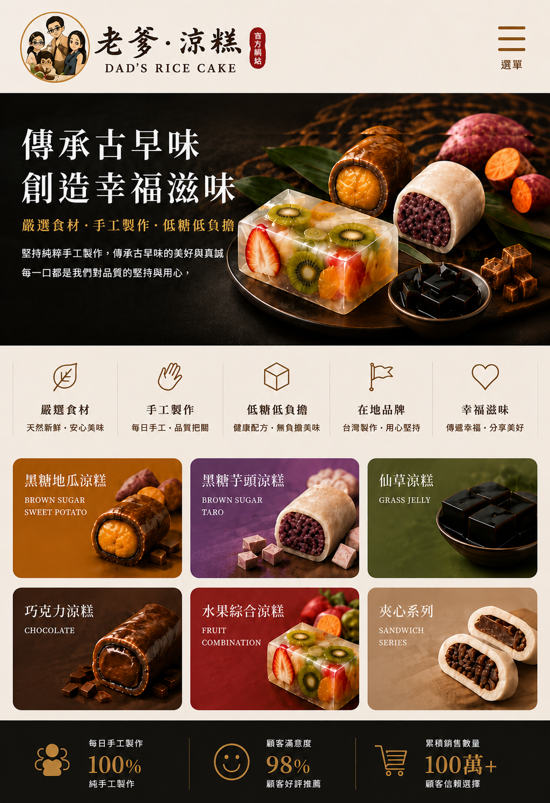
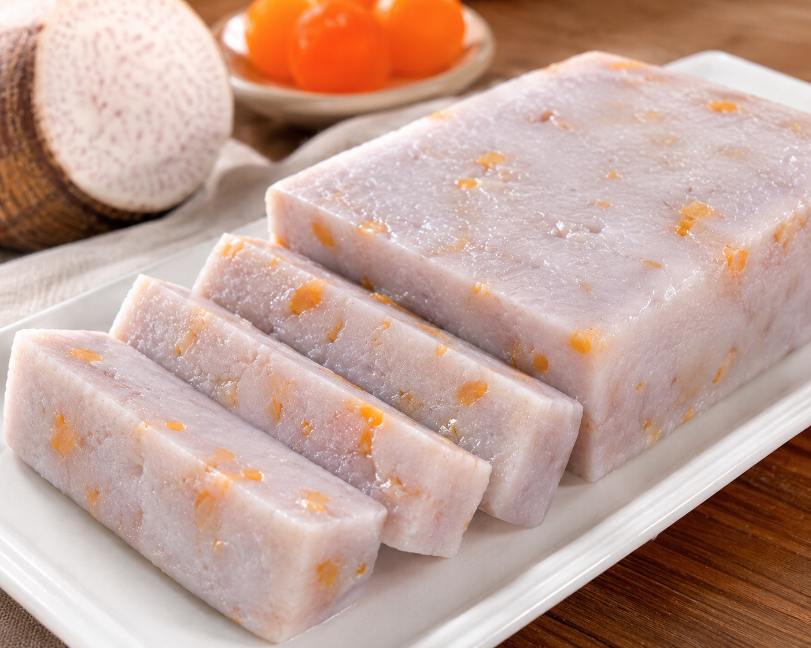
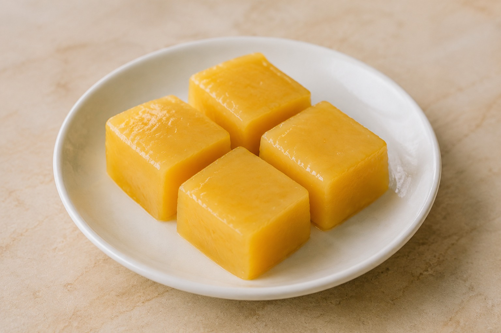

芋頭涼糕
選用香濃芋頭製作，口感柔軟滑嫩、清爽Q彈， 每一口都能品嚐到自然芋香。甜度適中、不膩口， 冰涼享用更加美味，是大人與小朋友都喜歡的經典口味。
- 口感：Q彈滑嫩、細緻綿密
- 風味：自然芋香、甜而不膩
- 建議食用：冷藏後享用風味更佳
- 保存方式：需冷藏保存，開封後請儘快食用
- 適合場合：下午茶、日常點心、家庭聚會及送禮
※手工製作，每批產品的顏色、大小及外觀可能略有差異，屬正常現象。

OUR PRODUCTS
手工製作・每日新鮮
選用香濃芋頭製作，口感柔軟滑嫩、清爽Q彈， 每一口都能品嚐到自然芋香。甜度適中、不膩口， 冰涼享用更加美味，是大人與小朋友都喜歡的經典口味。
※手工製作，每批產品的顏色、大小及外觀可能略有差異，屬正常現象。

以綿密芋頭搭配鹹蛋黃製作，將芋頭自然香甜與鹹蛋黃濃郁鹹香融合在Q彈滑嫩的涼糕中。 入口先感受到淡雅芋香，接著帶出鹹蛋黃特有的沙沙濃香，鹹甜交織、層次豐富，冷藏後享用更加清爽。
※ 手工製作，每批產品的顏色、大小及外觀可能略有差異，屬正常現象。

將香醇雞蛋布丁風味融入Q彈滑嫩的涼糕中， 入口散發淡淡蛋香與奶香，口感柔嫩細緻、香甜不膩。 冰涼後享用更加清爽，熟悉的布丁滋味搭配涼糕的彈嫩口感， 大人小孩都喜歡。
※手工製作，每批產品的顏色、大小及外觀可能略有差異，屬正常現象。

以香醇黑糖風味搭配綿密芋頭， 黑糖的濃郁焦香與芋頭的自然香氣完美融合。 外層涼糕Q彈滑嫩，內餡細緻飽滿， 入口香甜而不膩，冷藏後享用更加冰涼爽口。
※手工製作，每批產品的顏色、大小及外觀可能略有差異，屬正常現象。

以清香仙草風味製作，搭配Q彈滑嫩的涼糕口感， 入口帶有淡雅仙草香氣，清爽順口、甜而不膩。 冷藏後享用更加冰涼爽口，是炎熱天氣與下午茶的清爽選擇。
※手工製作，每批產品的顏色、大小及外觀可能略有差異，屬正常現象。

將杏仁的清雅香氣與綿密芋頭完美結合， 外層涼糕Q彈滑嫩，內餡保留細緻濃郁的芋頭風味。 入口先感受到淡雅杏仁香，接著是自然醇厚的芋香， 層次豐富、甜而不膩。
※手工製作，每批產品的顏色、大小及外觀可能略有差異，屬正常現象。

一盒集結多種水果風味，色彩繽紛、口感Q彈滑嫩， 每一塊都帶有不同的清甜果香，讓您一次品嚐多種驚喜。 每日會依照當天備料與製作情況搭配不同口味， 因此每盒內容可能不盡相同，每次品嚐都有新鮮感。
※每日水果口味依現場供應及製作為主，恕無法指定全部口味。 手工製作，每批產品的顏色、大小及外觀可能略有差異。

選用純杏仁製作，將濃郁自然的杏仁香氣融入Q彈滑嫩的涼糕中。 入口細緻柔嫩，散發醇厚杏仁香，甜度適中、清爽不膩， 冷藏後享用更能感受到冰涼滑順的口感。
※手工製作，每批產品的顏色、大小及外觀可能略有差異，屬正常現象。
OFFICIAL MERCHANDISE
老爹・涼糕品牌限定周邊商品
ABOUT US
「如果你問我們，為什麼會開始賣涼糕？」
其實一開始，我們也沒想過會做到餐車。
只是有一天，我們突然決定——
不然，為自己拼一次看看。
夫妻一起創業，聽起來好像很浪漫。
但真正開始之後才發現，每天面對的不是只有客人和訂單，還有成本、設備、送貨、交通、失敗……
甚至有時候忙了一整天，回頭一算，才發現：「咦？今天到底有沒有賺錢？」
但我們還是一步一步做。
從研究大家想要的口感、甜度與冷藏後的口感，到一次一次試口味，跟廠商調整餡料，再把一盒盒涼糕裝上車，開著車跑遍不同城市，親手送到客人手上。
菜市場擺攤，有時候凌晨還在準備；餐車隔天要出發，也是一早就得開始忙。
有人問我們：「這麼累，為什麼還要做？」
因為我們很清楚——
如果現在不努力，未來就不會有我們想要的生活。
我們不是一開始就有很厲害的設備，也不是一開始就有很多客人。
我們只有一台車、一些器具，還有兩個想把事情做好的傻夫妻。
所以這台涼糕餐車，對我們來說不只是一台餐車。
它載著我們的產品，也載著我們夫妻一起創業的夢。
從一盒涼糕開始，慢慢做到更多人認識我們。
我們不知道最後會走到哪裡，但至少現在——
我們正在一起努力，
把「想做的事」慢慢變成「做得到的事」。